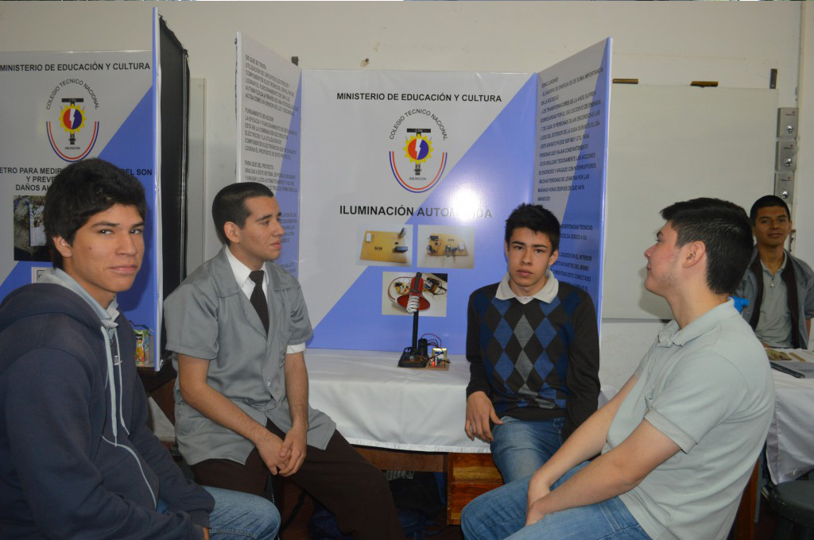
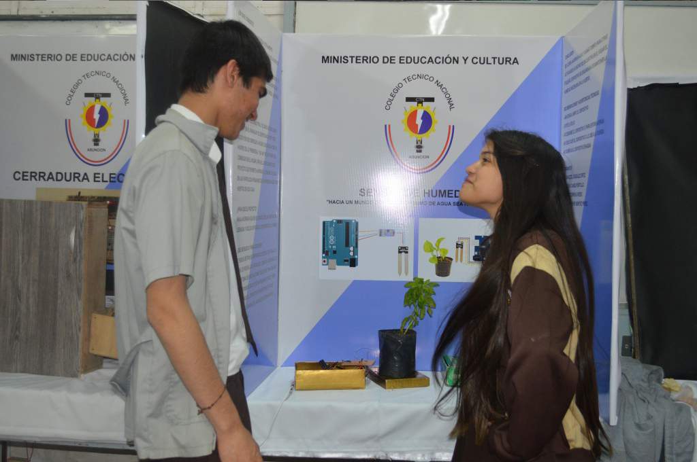

- 
- 
PERFIL GENERAL
- Perfil general del egresado El Egresado Técnico en Electrónica debe ser capaz de desarrollar y aplicar conocimientos científicos, humanísticos, tecnológicos y prácticos esenciales, que le permitan desarrollar actividades específicas de su profesión, con espíritu crítico y creador mediante el trabajo en equipo y multidisciplinario para que pueda enfrentar la vida y el mundo en forma competente, justa y solidaria, en el marco del desarrollo sostenible.
PERFIL ESPECÍFICO
Al término de los cursos de formación del Bachillerato Técnico en Electrónica, se concibe un Técnico de Nivel Medio quien será capaz de:
- Proyectar, componentes y equipos de electrónica analógica y/o digital, con tecnología electrónica estándar y de baja o mediana complejidad
Por consiguiente:
a. Realizar ensayos y mediciones eléctricas y electrónicas en dispositivos, componentes, equipos e instalaciones con electrónica analógica y/o digital, estándar de baja o mediana complejidad
b. Operar componentes, productos y equipos con electrónica analógica y/o digital
c. Realizar los mantenimientos, predictivo, preventivo, funcional operativo, y correctivo de componentes, productos y equipos con electrónica estándar, analógica y/o digital, de baja o mediana complejidad
- Aplicar con calidad los conocimientos adquiridos en la ejecución de trabajos.
Por consiguiente:
a. Interpretar especificaciones técnicas de máquinas, equipos, instrumentos y herramientas.
b. Montar dispositivos y componentes con electrónica analógica y/o digital, estándar de baja o mediana complejidad.
c. Realizar la selección, asesoramiento y comercialización de dispositivos, componentes, productos y equipos con electrónica analógica y/o digital, estándar de baja o mediana complejidad
PERFIL OCUPACIONAL
Cada uno de estos alcances particulares sobre la electrónica de los equipos, componentes, productos e instalaciones; en los ámbitos de control, telecomunicaciones, instrumentos, o electrónica industrial; tendrán en cuenta criterios de seguridad, cuidado del ambiente, ergonomía, calidad, productividad, y costos; según las definiciones estratégicas surgidas de los estamentos técnicos y jerárquicos correspondientes con autonomía y responsabilidad sobre su propio trabajo y sobre el trabajo de otros a su cargo.
Egresada de la Facultad de ** con el Titulo **. Egresado del Instituto Superior Salesiano de Estudios Filosóficos del curso de formación pedagógica para egresados universitarios. Inicia su actividad docente en el C.T.N en el año 1.999. Coordinador de la especialidad desde el año 1.999 al 2.003, 2.008 al 2011, y desde 2013 hasta la fecha.